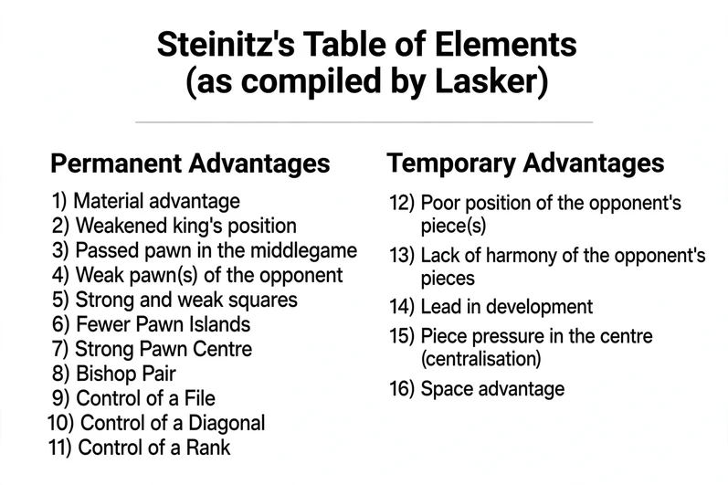
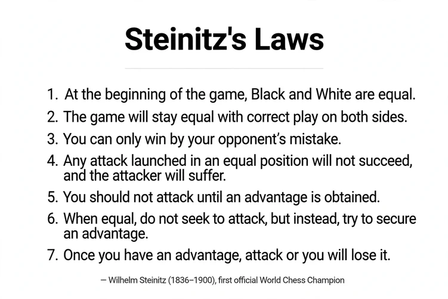

Temporary and permanent advantages
A short guide for answering question 2 of every position: What are the temporary and permanent advantages?
The idea
Permanent advantages are lasting features of the position. They do not disappear when a few moves are played, so they can be used slowly, even in the endgame.
Temporary advantages are fluid and dynamic. They are about the placing of the pieces. If you do not use them or turn them into something permanent, your opponent catches up and the advantage dissolves.
Look for both for each side. Steinitz taught that you may attack only when you have an advantage, and that an advantage you do not use will be lost.

Permanent advantages
- Material advantage. An extra pawn or piece. The most lasting advantage of all. Example →
- Weakened king's position. The king has lost its pawn shield, cannot castle, or stands on an open file or diagonal. Example →
- Passed pawn in the middlegame. A pawn with no enemy pawn in front of it or on the neighbouring files. It ties down the opponent's pieces. Example →
- Weak pawn(s) of the opponent. Isolated, doubled or backward pawns that need protection from pieces. Example →
- Strong and weak squares. A strong square (outpost) is one your piece can use and no enemy pawn can ever attack. The opponent's matching weak square is a hole. Example →
- Fewer pawn islands. A compact pawn structure with fewer groups is easier to defend. Example →
- Strong pawn centre. Pawns on d4/e4 (or d5/e5) that control the middle and cramp the opponent. Example →
- Bishop pair. Two bishops against bishop and knight, or two knights. Strongest in open positions. Example →
- Control of a file. A rook on an open or half-open file. Example →
- Control of a diagonal. A bishop or queen on a long open diagonal. Example →
- Control of a rank. Usually a rook on the seventh (or second) rank. Example →
Temporary advantages
- Poor position of the opponent's piece(s). A knight on the rim, or a bishop buried behind its own pawns. Example →
- Lack of harmony of the opponent's pieces. The pieces do not work together and cover each other's weaknesses badly. Example →
- Lead in development. More pieces in play, castled king, rooks connected. Example →
- Piece pressure in the centre (centralisation). Pieces placed in or aimed at the middle of the board. Example →
- Space advantage. More room behind your pawns lets your pieces move freely and leaves the opponent cramped. Example →
Steinitz's laws

The core law: accumulate and transform
Steinitz's philosophy: attack only when you have an advantage. The modern way to win is to convert a temporary advantage into a permanent one. For example, use a lead in development (the initiative) to force the opponent to weaken his pawn structure permanently, or to give up material.
How to use it in the positions
- Go down the list for White, then for Black. Write down only what is really there.
- Mark each one P (permanent) or T (temporary).
- If you have temporary advantages (a lead in development, an exposed king), the position asks for action now, before the other side catches up.
- If your advantages are permanent, you can improve slowly and avoid risky attacks.
- Choose candidate moves that use a temporary advantage, or that turn it into a permanent one (win a pawn, damage the pawn structure, gain the bishop pair).
Sources: the table and laws above are the images supplied for this book. The explanations are a plain-language summary. The diagrams come from the Lichess study “Steinitz’s Advantages” by cjcardoso.